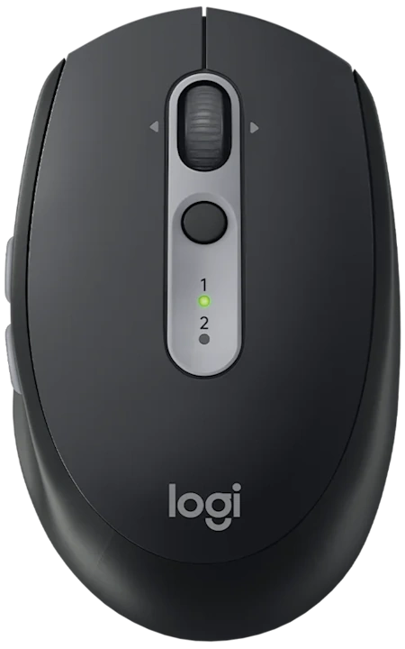

차세대 멀티 디바이스 사일런트 테크놀로지
로지텍 M590 Silent
두 대의 컴퓨터를 한 대처럼 자유롭게 오가는 Easy-Switch™와 소음 없는 클릭감.
조용하지만 강력한 정밀함으로 프로페셔널한 데스크 환경을 완성합니다.

마우스 위에 커서를 올리면 부드러운 확대(Scale-up) 효과가 적용됩니다.
더 조용하게, 더 많은 작업을 스마트하게
M590 Silent가 제공하는 4가지 핵심 생산성 솔루션
90% 소음 감소 클릭
Logitech SilentTouch 기술로 클릭감은 그대로 유지하면서 클릭 소음은 90% 이상 획기적으로 줄였습니다.
Easy-Switch™ 2대 연결
버튼 하나로 노트북과 데스크톱, 혹은 태블릿 간의 연결을 1초 만에 즉각 전환할 수 있습니다.
Logitech FLOW™ 호환
서로 다른 두 대의 PC 화면 사이로 커서를 넘나들며 텍스트와 파일을 손쉽게 복사 및 붙여넣기합니다.
최대 24개월 배터리
AA 배터리 1개로 자동 절전 모드와 On/Off 스위치를 통해 최대 2년간 배터리 교체 없이 사용 가능합니다.